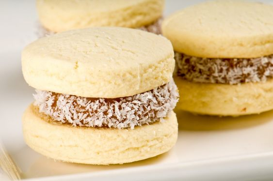
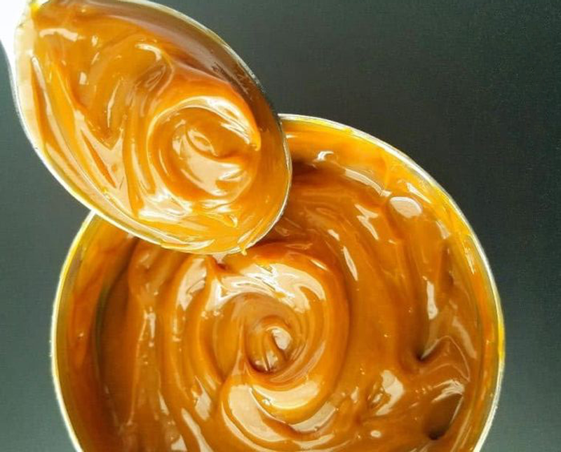

מתכון לעוגיות אלפחורס

תאור
מצרכים:
- 100 גרם חמאה רכה חתוכה לקוביות (יש להוציא מהמקרר לפחות שעה לפני ההכנה)
- שליש כוס (65 ג') סוכר
- 2 חלמונים (הצהוב של הביצה)
- חצי כפית תמצית וניל
- 2 כפות (20 מ"ל) חלב
- כוס (140 ג') קמח תופח
- 3/4 כוס (105 ג') קורנפלור
- ממרח ריבת חלב
- כשליש כוס (30 ג') קוקוס לציפוי
אופן הכנה:
- מקציפים במיקסר את החמאה עם הסוכר במשך כחצי דקה. מוסיפים את החלמונים ומערבבים. מוסיפים תמצית וניל וחלב ומערבבים.
- מוסיפים את הקמח והקורנפלור ומערבבים עם המיקסר. לאחר מכן לשים מעט עם הידיים עד לקבלת בצק אחיד, רך ונוח לעבודה (אם הבצק יוצא דביק – יש להוסיף מעט קמח תופח. אם הבצק יבש – יש להוסיף כמה כפות חלב בהדרגה ולפי הצורך).
- מחממים תנור מראש ל175 מעלות.
- פורשים נייר אפיה על משטח עבודה ומרדדים את הבצק לעובי של כחצי ס"מ. קורצים עיגולים בקוטר של כ-4 ס"מ (בעזרת קורצן עוגיות או כוס קטנה הפוכה). מרפדים את תבנית התנור בנייר אפיה ומניחים את העוגיות במרווחים קלים (ייתכן ותצטרכו לאפות בפעמיים מאחר ולא כל העוגיות נכנסות בתבנית אחת).
- אופים בתנור במשך 9-10 דקות, עד שהעוגיות מתייצבות אך עדיין רכות (העוגיות נותרות בהירות). מוציאים מהתנור ומניחים לעוגיות להתקרר לגמרי.
- לאחר שהעוגיות התקררו הופכים את מחציתן ומניחים על כל עוגיה כחצי כפית ממרח ריבת חלב. סוגרים עם עוגיה נוספת (בדומה לסנדוויץ') ולוחצים קלות מה שגורם לממרח לצאת לשוליים (זה מה שבעצם מסייע להדבקת הקוקוס). מגלגלים כל עוגיה בקוקוס.
- העוגיות נשמרות בטמפ' החדר בקופסה אטומה כ-5 ימים.

בתאבון!
